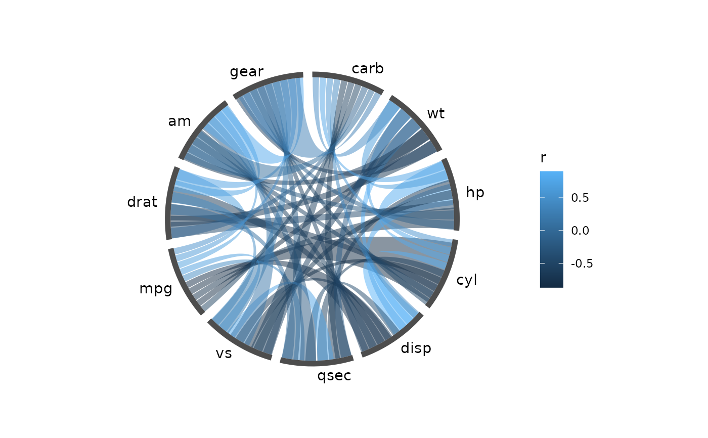
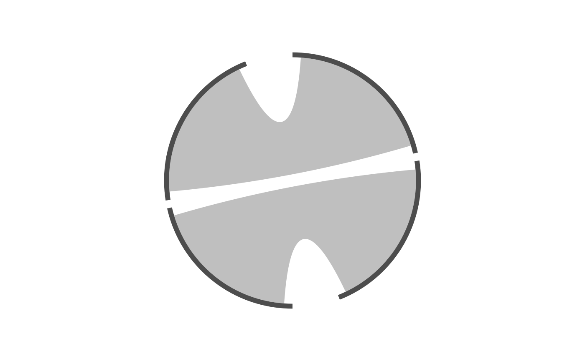

Creates the plot that every other ggcircos layer attaches to. The layout
– node arcs, sectors and the angular slot reserved for each link – is
computed once, here, and stored as data; it is never modified afterwards.
ggcircos() itself adds no layer, so you can draw links, node arcs,
labels and outer tracks in any order.
Usage
ggcircos(
data,
nodes = NULL,
sectors = NULL,
order = NULL,
layout = c("circular", "arc"),
gap = 0.01,
sector_gap = 0.05,
slot_fill = 0.9,
slot_gap = NULL,
start = 0,
tracks = NULL,
track_offset = 0.06,
self_loops = FALSE,
radius = NULL,
weight = NULL,
columns = NULL,
by = NULL,
...
)Arguments
- data
A square
matrix, adata.framewithfrom/tocolumns, atidygraph/igraphobject, or an existingcircos_layout.- nodes, sectors, order, gap, sector_gap, slot_fill, start, tracks, track_offset, self_loops
Passed to
circos_layout(), which documents each of them.- layout
"circular"for the polar layout,"arc"for the linear one, where links bulge to the left of a vertical spine.- slot_gap
Absolute seam in radians between adjacent link slots, the way
circlize::chordDiagram()'sdiffHeightis a fixed height.NULLuses theslot_fillfraction; a fixed value keeps ribbons visibly separate when a node carries many links.- radius
Base radius of the node ring.
ggcircos()derives this fromlayout; you rarely need to set it.- weight
Name of the column holding each link's weight, e.g.
weight = rorweight = "r"(a matrix suppliesr). Set it to make the layout carry the values the waycirclize::chordDiagram()does: node arcs proportional to the weight they carry, slots proportional to their link's weight. LeftNULLevery node keeps an equal arc and the values only driveaes(fill = ).- columns
Optional named character vector mapping the layout's column names onto your data's, e.g.
c(from = "qaccver", to = "saccver")for BLAST table output. The rename is a copy; columns you do not map travel with the link table, soweight =andaes()can still reach them.- by
Name of a node-table column to lay out one ring per group of its values (spec sec.9.1, the facet "B-plan"). Each panel gets its own node subset and its own ordering; finish with
facet_wrap(~ <the same column>). A link whose two ends fall in different groups is dropped with a message, since it belongs to no single ring.NULL(the default) builds one shared layout, the A-plan.- ...
Passed on to
circos_layout().
Examples
ggcircos(cor(mtcars), order = "hclust") +
geom_chord(aes(fill = r)) +
geom_node_arc() +
geom_node_text()

# two genomes in two sectors
nodes <- data.frame(
id = c("a", "b", "c", "d"),
genome = c("ref", "ref", "qry", "qry"),
stringsAsFactors = FALSE
)
links <- data.frame(
from = c("a", "c"), to = c("d", "b"),
stringsAsFactors = FALSE
)
ggcircos(links, nodes = nodes, sectors = "genome") +
geom_chord() +
geom_node_arc()
